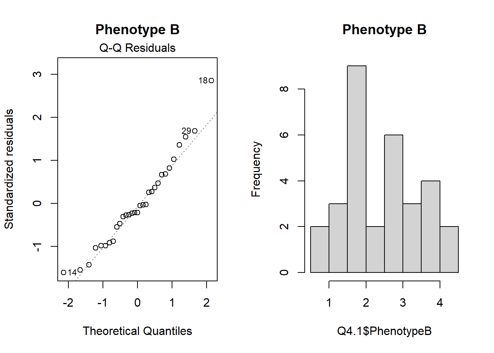
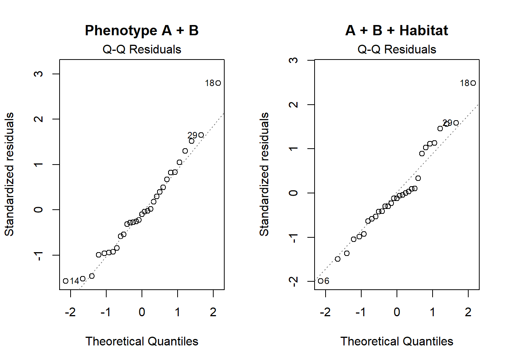
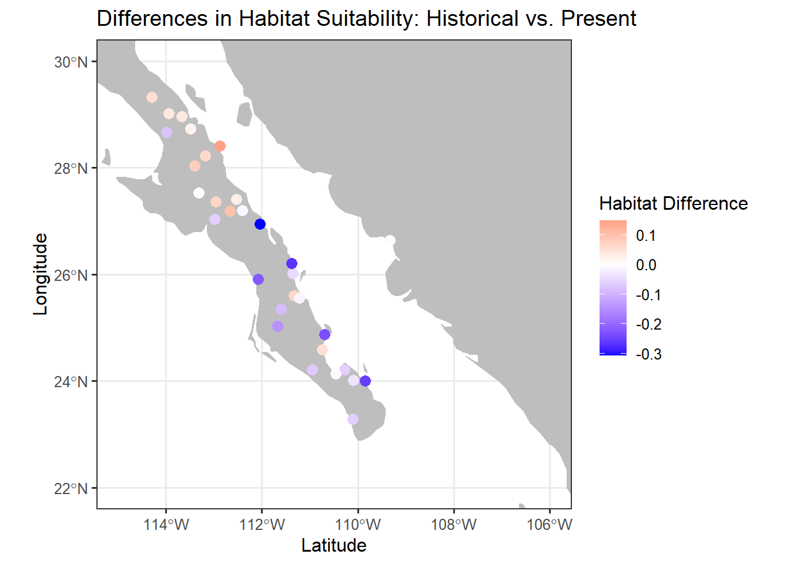
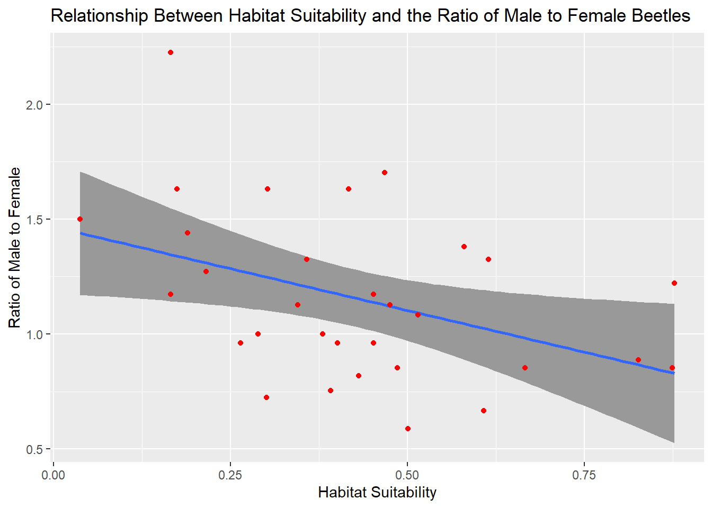

Final Exam Written Document
Abstract
The Sonora Desert bark beetle, Araptus attenuatus, is a tiny beetle that is found exclusively in the Sonora desert in parts of Mexico and the United States. This beetle has an interesting life cycle, as it lives inside a specific species of plant, Euphoria lomelli, and no where else. The males will hollow out a chamber inside of newly senescing stems of E. lomelli to live in. Once they have a home, males then produce a hormone that attracts females for reproduction. Both male and female beetles can fly, however, once a male gets a home established, they seem to stay in one place and it is the females that move around more. The overall motivation for this report is to determine the extent to which changing climate may have impacted sex ratio divergence of Araptus attenuatus among locations in the Sonora Desert.
Methods
The data sets used include a .CSV file (Ara Locations) of point locations for all 31 sampling sites, a .CSV (Ara Samples) of the raw characteristic beetle data for all 31 sites, a GeoTIFF (Suitability now) raster of estimated habitat suitability index, and a .ASC (Suitability lmg) raster of historical estimates for habitat suitability during the last glacial maximum.
To help determine if a changing climate influences the sex ratio, a couple of questions need to be answered:
- Do sampled populations of the beetle have different sex ratios? The
tidyversesuite of functions was used to group the “Ara samples” data by each site and then calculate a new column for the male to female ratio. Specifically, themutate,summarise, andgroup byfunctions.ggplotwas used to display the results graphically via a bar chart. - Which sites have sex ratios that deviate from equal proportions of males and females at the site? The
ggplotgraph from the previous question was used to show the deviation from a perfect 1:1 ratio. A red line was applied at 1 (perfect ratio) to show which sites had an equal number of males to females. - Is there a functional relationship between the habitat suitability at the sampling locations and the sex ratio? The
Ara locationsdata set was used to make asfobject calledsites. Then the “Suitability nowraster was read in, and theextractfunction was used to give eachsfpoint insitesan attributed suitability value from the raster.QQnormandggplotgraphs were used to visualize the data to determine the statistics to be ran. Almwas used to see if there was a relationship betweenMFRatio ~ HabitatSuitPresent. Once the model was created, the \(R^2\) and \(p\)-value were calculated to determine if the model was”strong” or not. Akabletable was used to display the results.
- Does the inclusion of Phenotype A and Phenotype B improve the functional relationship over habitat suitability alone?
Tidyversewas used again on theAra samplesdata to create two new columns,Phenotype AandPhenotype Bfor each site using thesummariseandgroupbyfunctions. Data was visualized usingQQnormandhistogramsto check for normality and residual behavior. Fourlmmodels were created;MFRatio ~ Phenotype A,MFRatio ~ Phenotype B,MFRatio ~ Phenotype A+Phenotype B, andMFRatio ~ Phenotype A+Phenotype B+Habitat Suitability. These four models were then put into adata.framefor further analysis where the \(R^2\), \(p\)-value, \(AIC\), and \(ΔAIC\) were calculated for each. Finally, the data was displayed in akabletable.
- Has the suitability changed from 20,000 years ago? The
Suitability lmgraster was read in, and theextractfunction was used again to retrieve historical habitat suitability scores. Thesitesdata set was used again to attribute the values to the 31 different sites.siteshas the present day habitat scores already from question 3, and aggplotbar graph was used to visualize the difference. Red bars represent a decrease in habitat score, and a green bar represent an increase in habitat score.
- What was the historical sex ratio, and are there trends due to climatic changes? The
sitesdata set was merged with the data set from question one containingMFRatio.Mutatewas then used to calculate two new columns namedΔHabitatandΔMFRatio.ΔHabitatwas calculated by subtracting the historical value from the present day habitat value.ΔMFRatiowas calculated by first using almto determine the current relationship betweenMFRatio ~ HabitatSuitPresent + HabitatSuitHistorical. Then thepredictfunction was used to determine the historicalMFRatio. After the historical was predicted, then it was subtracted from the present day to get the change.QQnorm,histogram, andshapiro.testwere used to visualize the behavior of the data and residuals to determine the correct statistical test. Aspearmans cor.testwas used to determine the significance of the relationship betweenΔHabitatandΔMFRatio. Finally, multipleggplotgraphs were used to visualize the differences in the historical vs present dayHabitat Suitabilityand theMFRatiothrough a map overlay.
Results
Q1: The different sampled populations (different sites) do have different sex ratios as demonstrated by the ggplot below (Figure 1).
Figure 1. Male to female ratio at each site.
Q2: Of the 31 sites, 29 sites had sex ratios that deviate from equal proportions of males to females. Sites 23 and 25 are the only two which have an equal 1:1 proportion (Figure 2).
Figure 2. Male to female ratio at each site.
Q3: The QQnorm and histogram plots tell us that the data is fairly well behaved, with the residuals being fairly tight along the dotted line, and the histograms being decently bell-curved, both indicating normal distributed. This informs us that our resulting \(p\)-values are valid.
Figure 3. QQnorm plot showing the lm residual distribution, and histograms for both individual variables.
The kable table for the lm of MFRatio ~ Habitat Suitability tells us that although only 16.9% of the variation of MFRatio is explained by HabitatSuitPresent, there is a significant relationship between the two variables with a \(p\) = 0.0215.
| Model | R2 | P |
|---|---|---|
| Male to Female Ratio ~ Habitat Suitability | 0.169 | 2.15e-02 |
Table 1. Male to Female Ratio Explained by Habitat Suitability.
Q4: The QQnorm and histogram plots tell us that Phenotype A and Phenotype Bare well behaved as individual variables. The residuals are decently tight along the dotted line, and the histograms being both normally distributed. The addition of multiple variables to the equations still shows residuals that are normal for both Phenotype A + Phenotype B, and Phenotype A + Phenotype B + Habitat Suitability. Again, the normal residuals informs us that our resulting \(p\)-value is valid.


Figure 4. QQnorm plot showing residual distribution, and histograms for individual variable data behavior.
The kable table below tells us that the variable with the best functional relationship is Habitat Suitability (Table 2). Habitat Suitability has the only significant \(p\)-value, \(p\) = 0.0215, (I.E. there is a relationship between MFRatio and Habitat Suitability) and it has the lowest \(AIC\), \(AIC\) = 24.687, and \(ΔAIC\), \(ΔAIC\) = 0. The lowest \(AIC\) value indicates the best model because that model strikes a better balance between fitting the data well and using fewer parameters (not over-fitting).
| Model | R2 | P | AIC | ΔAIC |
|---|---|---|---|---|
| Male to Female Ratio ~ Habitat Suitability | 0.169 | 2.15e-02 | 24.687 | 0.000 |
| Male to Female Ratio ~ Phenotype A + Phenotype B + Habitat Suitability | 0.231 | 6.57e-02 | 26.306 | 1.619 |
| Male to Female Ratio ~ Phenotype B | 0.036 | 3.03e-01 | 29.280 | 4.593 |
| Male to Female Ratio ~ Phenotype A | 0.005 | 6.94e-01 | 30.264 | 5.577 |
| Male to Female Ratio ~ Phenotype A + Phenotype B | 0.041 | 5.58e-01 | 31.139 | 6.452 |
Table 2. Male to Female Ratio Explained by Habitat Suitability, Phenotypes, and a combination of all variables.
Q5: When plotting historical and present day habitat suitability, it is clear that there are in fact changes between the two time periods (Figure 5). However, it is slightly difficult to distinguish where the greatest change is occurring on this map overlay.
Due to this, another ggplot, this time a geom_bar, was used to take a closer look at each site. 19 of the 31 sites saw a decrease in habitat suitability, while only 12 saw an increase, indicating a majority trend for a decrease in habitat suitability from 20,000 years ago. It was also apparent that there was a larger change in habitat for the decreasing sites compared to the increasing sites (Figure 6).
Figure 6. The change in habitat suitability from site to site. Red is a negative trend and green is a positive one.
Q6: The data tests show that the residuals of the QQnorm are normal, and the distribution of the newly created Predicted_MFRatio_Historical is also normal (Figure 7).
Figure 7. The QQnorm contains the Model.Q6 which shows the relationship MFRatio ~ HabitatSuitPresent + HabitatSuitHistorical. While the histogram shows the distribution of the Predicted Histroical MFRatio.
Next, the variables ΔHabitat and ΔMFRatio were displayed visually to see if there were any noticeable trends or relationships between the two variables (Figures 8+9).
Figure 8. Differences in Male to Female Ratio: Historical vs. Present.

Figure 9. Differences in Male to Female Ratio: Historical vs. Present.
There were not any major trends noticed only visually, therefore statistical tests were ran to further confirm or deny this. In determining which test to run, it was found that the data behavior of ΔHabitat was not normal, but the ΔMFRatio variable was normal. Both a Shapiro-Wilkes and a QQnorm were ran on both variables. The Shapiro-Wilkes returned a value of \(p\) = 0.8944 for ΔMFRatio, and \(p\) = 0.0177 for ΔHabitat, with a significant \(p\)-value of this test indicating non-normal distribution. The QQnorm plots also supported the Shapiro-Wilkes results (Figure 10).
Figure 10. Distribution of data and residuals for ΔHabitat and ΔMFRatio.
The behavior of the data resulted in a Spearman's Rho correlation test being ran, which resulted in a \(p\) = 0.7839. This obviously is not significant, meaning there does not seem to be significant relationship between the differences in climate (habitat suitability) and the male to female ratio.
Appendix

Figure 11. Correlation graph from question 3 showing the relationship between habitat suitability and male to female ratio.
Figure 12. Scatter plot showing the distributions of habitat suitability historically and presently.
`geom_smooth()` using formula = 'y ~ x'Figure 13. Scatter plot showing the relationship between the ΔHabitat and the ΔMFRatio.